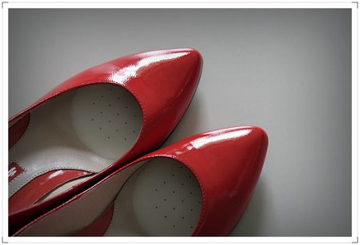

星期一．谷雨 @ Apr 20, 2009
谷雨是春天最后一个节气，果然谷雨前后雨纷纷。
早早发现自己视力下降，就这么眯着眼睛坐沙发上看电视看了好几月，实在不能忍受的周末去配了这副新眼镜。现在柜台里选择最多的又是适合小年轻的镜架，挑来选去买了这副，不用再眯着眼睛真好。阴雨天是失落的，不能去西藏了，鱼和熊掌不能兼得，去西藏就去不了别的地儿，一年就两星期带薪假，还不好意思一次休完...活着真郁闷，估计死了也郁闷，想去的地方去不成。这次机会挺难得的，全是自驾EX车，他们将18寸轮毂换成16寸的，换了全合成机油，做了好些准备，去年我为此还购进一个蜂窝式油箱和一个车载的电热杯。人生为何那么苦闷呢？


七分袖的长西装，很容易搭配。袖口有三颗扣子从未扣过，扣上太紧不方便活动。背后一道延伸至腰部的分岔，黑色锦缎包边。很喜欢里面这件sisiley黑色合身体恤，中袖，略带弹性的丝棉质感，一字大领口，有些简单的式样效果却不一般。

这是冬天姐姐付款送给我的鞋，不是大红色而是猩红色的。这种猩红很难得到她的理解，她是不会选这样颜色的鞋来穿的。今天第一次穿，里面加了半码鞋垫，3寸左右的深色木纹鞋跟，最最主要的是不象其他皮鞋走起路来那么响。喜欢一些边缘色，也许是因为特别吧。

19 Responses to “星期一．谷雨”
2009-04-20
这身很赞啊~~喜欢！
眼镜不错，很少有人戴白色眼镜好看的，因为白色会比较突兀。。我也刚配了眼镜，500大洋配了4副，超便宜，活活活~~
2009-04-20
偶不是太喜欢这副眼镜~~象没镜片~嘿嘿！建议上身灰西装上能否加个长丝巾，呼应一下~~纯粹是个人喜好~~
2009-04-20
配个36寸项链倒可以考虑，配围巾就算了，喜欢简洁的风格。
2009-04-20
亲爱的，不全是白色，是黑白条纹的镜框。
2009-04-20
现在有不少人里面是隐形眼睛,外面搞一个空的镜框.
很想搞一个像熊猫一样大大的眼镜,像江ZE明的那种:)
2009-04-20
去西藏的机会应该很多，别伤心：）去西藏自驾的话估计对车的损伤很大，呵呵，如果是我，可舍不得。
2009-04-20
不自由的时候也不可以抬头笑笑。那眼镜儿给人感觉有点冷。小红鞋看起来就暖暖的。冷暖相宜。
2009-04-20
这身搭配值得借鉴，不过估计我穿上这件西装可能会显老气。
2009-04-20
楼主的照片拍的真好，1/10S竟然都没有糊掉，铁手功赞一个！
2009-04-20
为什么去西藏要换成小轮毂的呢，是因为怕没有轮胎换么
2009-04-20
冷的眼镜正好天气暖和的时候用，呵呵~
换成小轮毂，胎自然是16寸胎，相对18寸进口原装胎只要1000元一条，即使路上扎坏了换胎，成本也省点儿吧，过坑坑洼洼的路，宽胎也不适合。
2009-04-20
反对！不要开车去，通麦天险非常人想象。今年去不成才好，^_^！以后随摄影团走，可以激发创作灵感，而且那种节奏也比较适合你。
2009-04-20
带个电压逆转器和电动气泵，查查电池，备副充电缆。如是越野，最好配前副绞盘。别太信GPS，用来定位还可以。
鞋子不错，看得出买的人很有品位。配牛仔有点怪，是混搭么？
2009-04-20
要是正儿八经配条西裤恐怕就不是茶小样儿的风格罗。
2009-04-21
租辆车，你那种车恐怕不能越野。
2009-04-21
那双小红鞋,搭配起来真是好看
2009-04-21
这次我不去西藏了。
西藏的计划里没有“无人区”，所以不用担心。桑塔那都能跑西藏玩N趟，我这车更能胜任了。
2009-04-21
超赞~！
2009-04-21
你的车是能胜任啊，但是刮到哪儿你不心疼啊？
去阿里很辛苦，开到你崩溃。话说快通高速了，那时候开车就很方便了。
Leave A Reply
存档只读，评论已关闭。